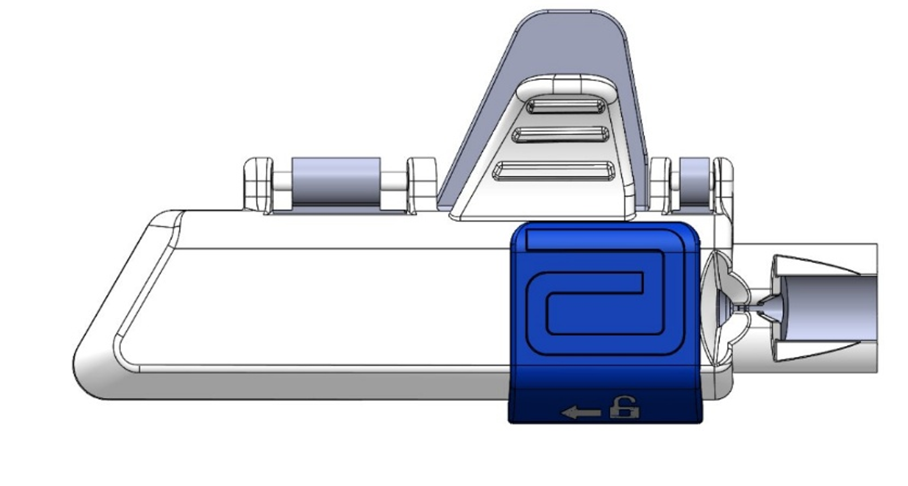

FIG. 01
Abbott CRM · R&D Intern
Leadless Pacemaker Loading Tool
Led design iteration on a new loading tool for Abbott's AVEIR CSP leadless pacemaker, built around a novel ball-cone tethering mechanism. Ran 50+ concepts through an agile brainstorm-and-test cycle, developed latch-activation and docking-cap insertion force methods on an Instron, and validated designs across 11+ physician usability studies ahead of an IDE submission.
- CAD / Rapid Prototyping
- Instron Force Testing
- Human Factors
- DFM